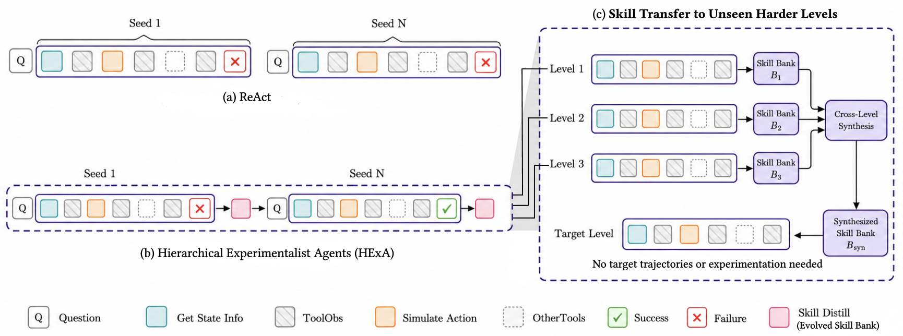

01研究背景与问题定义
面对陌生物理交互任务，模型常知道一般规律，却不知道当前几何和参数怎样决定结果。一次错误不能只归结为常识不足：代理可能没有提出可检验假设，没有观察关键接触事件，或者下一次仍重复相同试探。把完整历史塞回上下文会记住细节，却不一定形成可迁移的实验策略。
HExA 把学习放到主动实验和外部技能库之间。actor 在模拟器中干预并观察，evolver 对一批带奖励轨迹总结可复用技能和错误，retriever 在以后回合取出相关条目。它不更新模型参数；提升来自跨实例积累的上下文策略，而不是隐藏的离线监督或更强教师。
| 信息 | 直接保留的局限 | HExA 要提炼的内容 |
|---|---|---|
| 一次成功参数 | 换几何与初始状态后可能失效 | 适用条件、作用机制与使用步骤 |
| 一次失败 | 只知道没成功，容易重复 | 失败条件与应该避免的策略 |
| 多轮试验 | 局部细节占满上下文 | 怎样提出假设、检查结果和安排试验的高阶技能 |
02方法与技术路线
HExA 以任务族中的多个 seed 为实例流，逐轮生成经验、更新技能库。每个实例内环境按行动实际模拟；跨实例只携带提炼后的外部技能。
Retriever
按当前任务与标签选择 top-M 技能和 top-N 错误，作为有界前缀注入 actor。
Actor 的内层实验循环
检查场景 → 提出干预 → 调用部分/完整模拟与接触日志 → 根据观察修改假设；成功或达到回合上限终止。
Evolver
结合旧库与本轮成功/失败轨迹，提炼、修订或组织策略；生成下一轮持久技能库。
主动实验要产生与假设相关的证据
actor 可调用几何描述、首次接触预测、部分轨迹模拟与完整模拟等工具。工具的价值不只是让代理看见更多数据，而是允许它检查某个动作究竟在哪一段失效，再改变下一次干预。每个实例在有限步数内尝试，终止动作由模拟目标判定成功。
方法不规定一套固定实验设计算法，如何选参数、何时查看接触记录仍由 actor 推理。因而主动学习能力不是由工具列表自动保证的，技能库的作用是把此前有效的试验方式带入这个选择过程。
奖励为什么不只区分成功和失败
轨迹奖励综合结果与效率，并使用离散档位。快速成功更有价值；失败若经过充分探索，也比很早退出更能提供学习材料。这个奖励直接给 evolver 作为可解释标签，不是用于梯度训练 actor 的数值损失。
因此失败被保留不意味着鼓励永远失败，而是承认失败轨迹中的信息量不同。只学成功例可能漏掉“某种放置看似可行却总是被遮挡”的稳定边界；这些错误知识能减少以后的无效试探。
技能的层级性怎样形成
evolver 读取旧库与新批次轨迹，将操作总结为何时使用、能帮助什么、何时避免。后续技能在已经可用的先前技能基础上产生，可能进一步概括如何实验本身，而非只记录某个物理配置。
检索把当前相关技能和错误放入有界前缀，actor 仍可选择忽略不适用条目。论文还把较简单关卡的多份技能库合成后迁移到困难关卡，不需要目标关卡轨迹；这是检验抽象程度的强条件，但不能保证每条自然语言规律都具有物理正确性。
论文原始结构图 · 点击对照

03实验设计与结果分析
技能积累是否同时提高成功与试验效率
| 关卡 / 模型 | ReAct 成功率 / 平均迭代 | HExA 成功率 / 平均迭代 |
|---|---|---|
| Down to Earth / Qwen2.5-3B | 8.0% / 23.8 | 24.0% / 18.6 |
| Two Body Problem / Qwen2.5-7B | 18.0% / 22.2 | 34.0% / 18.9 |
| Catapult / GPT-OSS-120B | 0.0% / 25.0 | 54.0% / 16.2 |
成功更高且平均迭代更少，支持技能可帮助 actor 避免无效试验。这里的迭代不是全部成本：evolver 的额外分析与以往实例探索形成了前置投入，跨实例摊销后才可讨论整体效率。不同模型和关卡的行不能拼成模型规模定律。
没有目标关卡经验时还能迁移吗
| 目标 / 模型 | 技能来源 | 无迁移 → 迁移 |
|---|---|---|
| Catapult / Sonnet | DTE、TBP、PTP | 8% → 44% |
| Falling Into Place / Qwen-7B | DTE | 20% → 32% |
| Two Body Problem / Qwen-7B | DTE | 18% → 34% |
Catapult 由 4/50 提高到 22/50，较有力地支持技能包含跨实例甚至跨结构的可用知识，而不只是记住目标答案。但目标和来源仍属于同一模拟任务体系，不能据此宣称已具备一般科学发现能力。
04贡献、局限与综合评价
贡献是把实验过程本身作为可学习经验
HExA 不只是保存成功操作，还学习怎样收集能改变判断的证据，并把失败条件纳入可重用策略。目标级迁移说明其部分表示超出了单个配置，支持“从 interaction 学会更会 interaction”的研究方向。
迁移增益需要和来源探索投入一起解释
目标关卡不需要先产生轨迹，是较强的迁移条件；但技能已经吸收来源关卡上的大量交互。目标平均迭代下降说明这些经验能加速求解，不意味着整个过程比从零基线无条件便宜。更有意义的效率问题是：来源技能被多少新实例复用后能够摊销，以及面对分布变化是否仍节约试验。若少量陌生几何就迫使重新构库，贡献更接近同族经验缓存；若多种结构共享实验技能，则更接近持久的方法学习。
语言技能是否真实概括，需要反事实验证
技能由同一 LLM 从相关轨迹归纳，可能把共同出现的几何特征误作因果条件。检索标签也主要来自经验结果，未直接验证规则在适用域内是否稳定成立。高成功率证明实用性，却不自动证明技能内容正确。
更有区分力的测试是对技能声称关键的条件作受控改变，再测 actor 是否相应调整干预，并比较等量原始轨迹摘要的控制。若自然语言技能能在这些反事实中保持有效，才更支持层级抽象；若收益主要来自先前探索和提示容量，则应将贡献定位为高效经验复用。现有结果说明该机制值得研究，抽象边界仍应通过干预而非措辞判断。